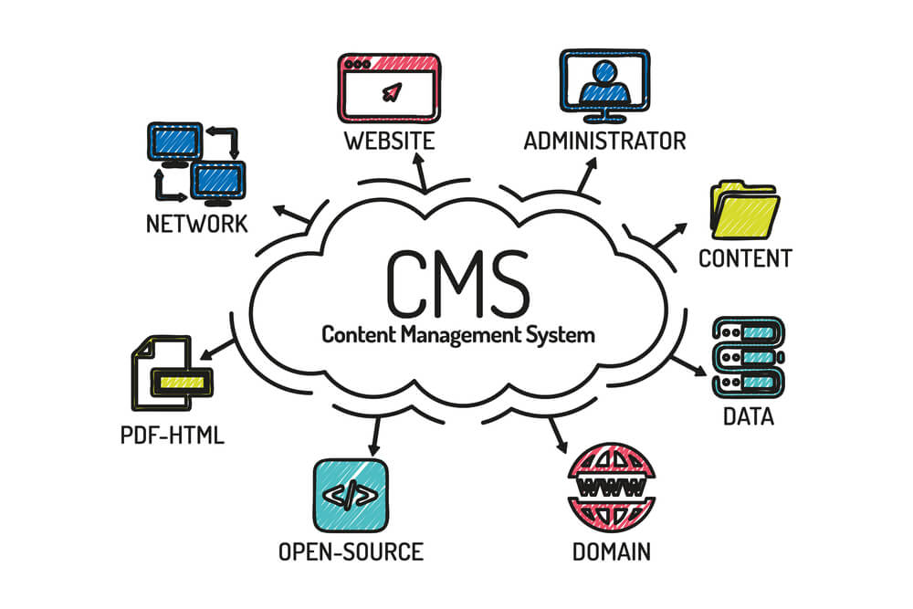

CMS
Um CMS (Content Management System) é um sistema de gerenciamento de conteúdo que permite criar, editar, organizar e publicar conteúdos digitais (como textos, imagens e vídeos) sem a necessidade de conhecimentos avançados em programação. Ele é amplamente utilizado para a criação de sites, blogs, portais de notícias, lojas virtuais e plataformas institucionais.
Com a evolução da web e a necessidade de distribuir conteúdo para múltiplos canais (sites, aplicativos, smart TVs, dispositivos IoT), surgiu o conceito de Headless CMS, que separa a gestão do conteúdo da camada de apresentação. Essa diferença estrutural impacta diretamente na flexibilidade, escalabilidade e forma de desenvolvimento dos projetos digitais.
CMS x Headless CMS
- O que é um CMS Tradicional?
- Interface administrativa amigável
- Templates prontos
- Plugins e extensões
- Desenvolvimento mais rápido
- Estrutura fechada (front-end acoplado)
- WordPress
- Joomla
- Drupal
- 1 Principais Características
- Separação entre conteúdo e apresentação
- Distribuição via API
- Maior flexibilidade tecnológica
- Melhor escalabilidade
- Ideal para projetos omnichannel
Um CMS tradicional (também chamado de CMS monolítico) integra duas partes principais: Back-end: onde o conteúdo é criado e gerenciado. Front-end: onde o conteúdo é exibido ao usuário final. Ou seja, o sistema já vem com templates, temas e estrutura pronta para exibição.
1.1 Principais Características
1.2 Exemplos de CMS Tradicional
Esses sistemas são amplamente utilizados para blogs, sites institucionais e e-commerces.
O que é um Headless CMS?
O termo Headless significa “sem cabeça”. Nesse modelo, o CMS gerencia apenas o conteúdo (back-end), enquanto a camada de apresentação (front-end) é desenvolvida separadamente. O conteúdo é disponibilizado por meio de APIs (geralmente REST ou GraphQL), permitindo que ele seja consumido por qualquer plataforma: sites, aplicativos mobile, sistemas internos, entre outros.